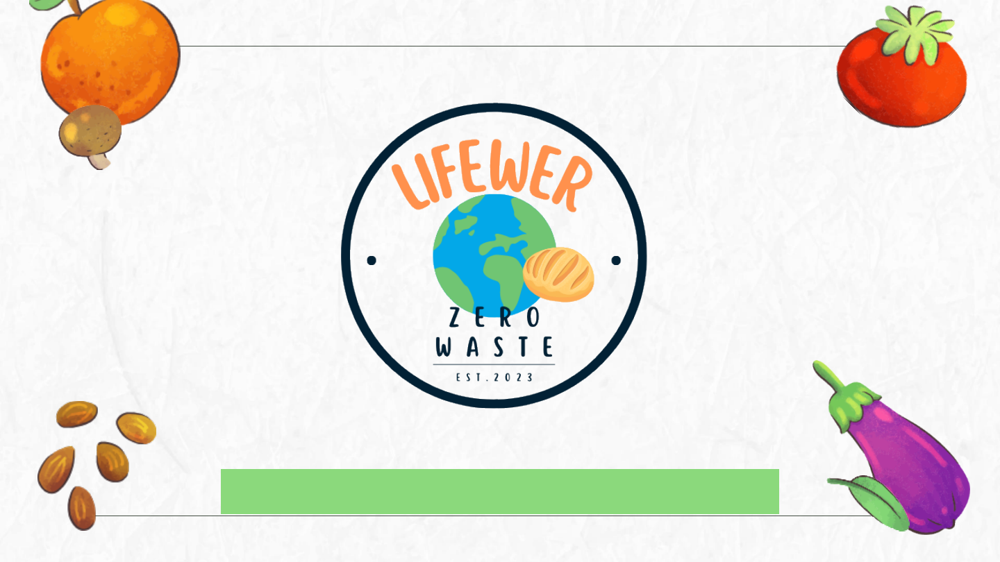
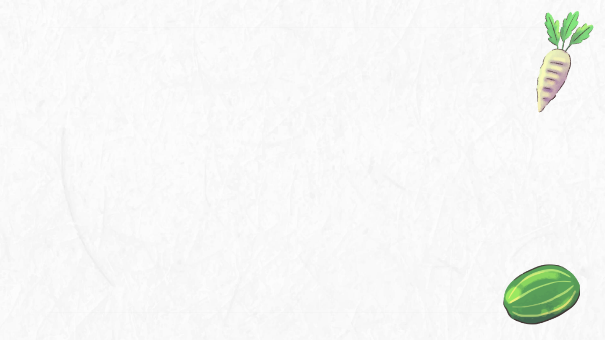
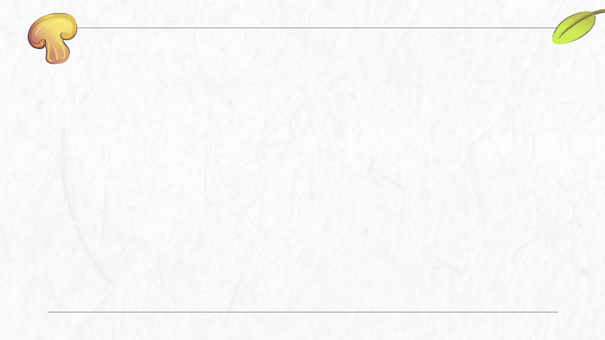
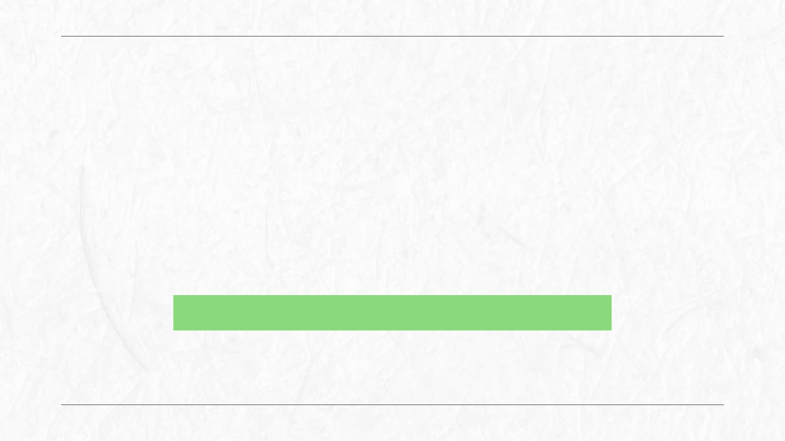

Proyecto�Multimedia�Jalisco

Lifewer:�respuestas�escalables,�sostenibles�y�
sustentables�para�vivir�mejor�
En�el�mundo,�se�desperdician�1.300�millones�de�toneladas�de�alimentos�al�año,�
mientras�que�1�de�cada�9�personas�pasa�hambre.�Lifewer�busca�crear�un�sistema�
innovador� que� conecte� a� productores,� distribuidores� y� consumidores,� para�
evitar� que� los� alimentos� se� desperdicien� y� se� entreguen� a� quienes� más� lo�
necesitan.�Queremos�utilizar�nuestra�plataforma�para�transformar�la�manera�en�
que� el� mundo� piensa� sobre� el� desperdicio� de� alimentos� y� la� seguridad�
alimentaria,� ayudando� a� millones� de� personas� a� tener� acceso� a� alimentos�
saludables�y�nutritivos.�Si�podemos�lograrlo,�no�solo�transformaremos�la�vida�de�
muchas� personas,� sino� que� también� estaremos� haciendo� una� contribución�
significativa�a�la�lucha�contra�el�cambio�climático.
Lifewer:�respuestas�escalables,�sostenibles�y�
sustentables�para�vivir�mejor�
En�Lifewer,�creemos�en�la�importancia�de�crear�respuestas�escalables,�
sostenibles� y� sustentables� para� vivir� mejor.� Queremos� que�
Latinoamérica�se�convierta�en�la�mejor�opción�para�vivir�en�el�mundo,�
ya�que�creemos�que� podemos� tener� la� mejor�calidad�de�vida� si�nos�
empezamos�a�preocupar�por�lo�más�noble�que�tenemos:�el�lugar�donde�
vivimos.�Por�eso,�nuestra�misión�es�generar�soluciones�innovadoras�y�
sostenibles� para� cuidar� y� amar� a� nuestro� planeta,� y� así� crear� una�
cultura�diferente�en�Latinoamérica�que�nos�permita�vivir�en�armonía�
con�nuestro�entorno�y�mejorar�nuestra�calidad�de�vida.�

En� Lifewer,�nuestra�misión� es� transformar�el� mundo� a� través�de� soluciones�
tecnológicas�sostenibles�e�innovadoras�que�permitan�a�las�personas�mejorar�su�
calidad�de�vida�y�cuidar�nuestro�planeta.�Nos�enfocamos�en�crear�herramientas�
y�sistemas�escalables�que�promuevan�el�uso�eficiente�de�los�recursos,�reduzcan�
el� desperdicio� de� alimentos� y� conecten� a� productores,� distribuidores� y�
consumidores� para� satisfacer� las� necesidades� de� todos.� Estamos�
comprometidos�en�construir�un�futuro�en�el�que�la�tecnología�nos�permita�vivir�
de�forma�más�justa,�saludable�y�sostenible�para�todos.
Misión

La� visión� de� Lifewer�es� ser� la� primera� opción� en� la� mente� de� las� personas�
cuando� piensan� en� un� lugar� mejor� para� vivir,� sostenible,� ecológico� y�
sustentable.�Queremos�que�en�todas�las�empresas�se�pida�el�perfil�de�Lifewer�
para� evaluar� el� impacto� positivo� que� cada� persona� está� teniendo� en� la�
construcción�de� un� mundo� mejor� para� todos.� En� Lifewer,�queremos� que� las�
grandes�empresas�y� restaurantes�nos� vean� como� su�primera�opción� cuando�
buscan� formas�de� reducir� su� impacto� en� el� medio� ambiente� y� ayudar� a� las�
personas�a�través�de�una�de�las�necesidades�más�básicas:�la�alimentación.
Visión

No�creemos�en�la�idea�de�que�si�uno�hace�algo�para�salvar�al�planeta,�pero�los�
demás�no�lo�hacen,�su�esfuerzo�no�tiene�sentido.�En�cambio,�creemos�que�cada�
pequeño�esfuerzo�cuenta,�y�que�si�todos�trabajamos�juntos,�podemos�lograr�un�
cambio�significativo�en�el�mundo.�Queremos�construir�una�cultura�en�la�que�la�
sostenibilidad,� la� responsabilidad� social� y� el� cuidado� del� planeta� sean� los�
valores�centrales.�Con� Lifewer,�estamos� transformando�la� manera� en� que� el�
mundo�piensa�sobre�la�alimentación�y�el�desperdicio�de�alimentos,�y�estamos�
creando�un�futuro�mejor�para�todos.
Visión

• Para�la� parte� de� backend,� utilizamos� Python� con�el� framework�Flask� y� la�
biblioteca� SQLAlchemy� para� manejar� nuestra� base� de� datos� con�
PostgreSQL.�Además,� para� integrar�la� parte� de� Android,� utilizamos�Kotlin�
para�el�desarrollo�de�la�aplicación�móvil.
• Por�otro�lado,�para�la�parte�de�frontend�de�nuestra�app,�utilizamos�Retrofit�y�
Glide�para�manejar�la�comunicación�con�nuestro�backend�y�cargar�imágenes�
de� manera� eficiente.�Y�para� la� parte� de� desarrollo�en� general,� utilizamos�
Android�Studio�y�Visual�Studio�Code.
• ¡Y� así� es� como� creamos� una� plataforma� innovadora� para� conectar� a�
productores,� distribuidores� y� consumidores� y� evitar� el� desperdicio� de�
alimentos!
Nuestro�material�de�construcción

• En�Lifewer,�siempre�estamos�buscando�maneras�de�mejorar�y�avanzar�en�
nuestra�misión�de�crear�un�mundo�más�sostenible�y�justo.�Es�por�eso�que�
estamos� emocionados� de� compartir� algunas� tecnologías� que� podríamos�
implementar�en�el�futuro:
• ¡iOS,�te�estamos�viendo!�Queremos�llegar�a�aún�más�personas�a�través�de�
nuestra�aplicación� móvil,� y� estamos� pensando� en� desarrollar�una� versión�
para�iOS.�¡Así�que�prepárense,�usuarios�de�iPhone,�porque�estamos�llegando!
• ¡El�mundo�en�línea!�Para�aquellos�que�prefieren�acceder�a�nuestros�servicios�
a� través� de� su� navegador� web,� estamos� explorando� la� posibilidad� de�
desarrollar�una�versión�web�de�nuestra�plataforma.�Así�es,�¡Lifewer�podría�
estar�solo�a�unos�clics�de�distancia!
Retos�técnicos�para�el�futuro�
• Mejorando� la� tecnología:� Como� parte� de� nuestro� compromiso� con� la�
innovación,�estamos�considerando�el�uso�de�Goo,�una�tecnología�de�base�de�
datos� de� última� generación,� para� nuestro� backend.� Esto� nos� permitiría�
manejar�grandes�cantidades�de�datos�de�manera�más�eficiente,�y�acelerar�
aún�más�nuestras�operaciones.
• En� la� nube� con� Microsoft:� Para� mejorar� aún� más� la� escalabilidad� y� la�
eficiencia,�estamos�explorando�la�posibilidad�de�utilizar�la�plataforma�de�la�
nube� de� Microsoft,� Azure,� para� alojar� nuestros�servicios.� ¡Así� podríamos�
llegar�a�aún�más�personas�de�manera�más�rápida�y�efectiva!
• ¡En�Lifewer,�siempre�estamos�buscando�maneras�de�avanzar�y�mejorar!�Así�
que�manténganse�atentos,�porque�estamos�emocionados�de�lo�que�el�futuro�
nos�depara.
Retos�técnicos�para�el�futuro�

• Además,�en�Lifewer�también�estamos�interesados�en�explorar�el�uso�de�la�
inteligencia� artificial� en� el� futuro.� Una� de� las� formas� en� que� podríamos�
implementarla�sería�a�través�del�análisis�de�datos�para�predecir�patrones�de�
desperdicio�de�alimentos�y�así�encontrar�formas�más�efectivas�de�reducirlo.�
También�podríamos� utilizar� la� IA�para� optimizar� las� rutas� de� entrega�de�
alimentos�a�organizaciones�benéficas,�asegurando�que�los�alimentos�lleguen�
a�su�destino�de�manera�más�rápida�y�eficiente.�
Retos�técnicos�para�el�futuro�

• 1.� Comunidad:� Nos�enfocamos�en� crear�una� comunidad� fuerte�y�solidaria,�
donde�todos�se�sientan�apoyados�y�puedan�crecer�juntos.
• 2.� Aprendizaje� continuo:� Creemos� en� la� importancia� del� aprendizaje�
constante�y�nos�esforzamos�por�brindar�herramientas�y�recursos�para�que�
nuestros�miembros�puedan�mejorar�en�su�vida�personal�y�profesional.
• 3.�Respeto:�Nos�comprometemos�a� tratar�a� todos�nuestros�miembros�con�
respeto� y� dignidad,� sin� importar� su� origen,� género,� orientación� sexual,�
religión�o�cualquier�otra�característica�personal.
• 4.� Empatía:� Fomentamos�la� empatía� y� la� comprensión�hacia� los� demás,�y�
trabajamos� para� crear� un� ambiente� donde� cada� miembro� pueda� sentirse�
comprendido�y�valorado.
Cultura�

• 5.� Honestidad:� Creemos� en� la� importancia� de� la� honestidad� y� la�
transparencia�en�nuestras�acciones�y�decisiones,�y�nos�comprometemos�a�
ser�siempre�honestos�con�nuestra�comunidad.
• 6.� Innovación:� Buscamos� siempre� nuevas� formas� de� mejorar� y� de� crear�
soluciones�innovadoras�para�los�desafíos�que�enfrentamos.
• 7.� Sostenibilidad:� Nos� preocupamos� por� el� bienestar� del� planeta� y� nos�
comprometemos�a�tomar�decisiones�que�sean�sostenibles�y�respetuosas�con�
el�medio�ambiente.
• 8.�Pasión:�Nos�apasiona�lo�que�hacemos�y�nos�esforzamos�por�contagiar�esa�
pasión�a�nuestra�comunidad,�motivándolos�a�perseguir�sus�sueños�y�metas�
con�entusiasmo�y�dedicación.
• 9.�lo�que�se�puede�medir�se�puede�mejorar�
Cultura�

• 1.� Dream� Team� (Equipo� de� sueño):� Responsables� de� generar� ideas� creativas� y�
transformarlas� en� proyectos� innovadores� y� exitosos.� Ubicados� en� la� Torre� de�
Astronomía.
• 2.� Code� Wizards� (Magos� del� código):� Encargados� de� crear� soluciones� técnicas� y�
desarrollar�software�de�alta�calidad�para�satisfacer�las�necesidades�de�los�usuarios.�
Ubicados�en�la�Torre�de�Ravenclaw.
• 3.�Human�Connection�(Conexión�humana):�Se�centran�en�comprender�las�necesidades�
y� deseos� de� los� usuarios,� estableciendo� relaciones� sólidas� y� duraderas� con� ellos.�
Ubicados�en�la�Torre�de�Gryffindor.
• 4.�Sustainable�Culture�(Cultura�sustentable):�Encargados�de�transformar�la�revolución�
sostenible�en�una�cultura�arraigada�en�la�empresa�y�la�sociedad.�Trabajan�para�educar�
a� las� personas�desde�una� edad� temprana� sobre�la� importancia� de� cuidar� el�medio�
ambiente,� ofreciendo� capacitaciones� en� empresas� para� promover� prácticas� más�
sostenibles.�Ubicados�en�la�Torre�de�Hufflepuff.
Organización�empresarial�

• 5.� Financial� Wizards� (Magos� financieros):� Encargados� de� manejar� las�
finanzas�de�la�empresa�y�asegurarse�de�que�estén�saludables�y�sostenibles�a�
largo�plazo.�Ubicados�en�el�Gran�Comedor.
• 6.� Operations� Masters� (Maestros� de� operaciones):� Responsables� de�
garantizar� que� los� procesos� y� operaciones� de� la� empresa� funcionen� sin�
problemas�y�de�manera�eficiente.�Ubicados�en�la�Sala�de�los�Menesteres.
• 7.�Marketing�Wizards�(Magos�de�mercadeo):�Encargados�de�crear�estrategias�
de� marketing� efectivas� para� promocionar� los� productos� y� servicios� de�
Lifewer�y�atraer�a�nuevos�usuarios.�Ubicados�en�la�Sala�de�los�||Fundadores.
Organización�empresarial�

Gracias